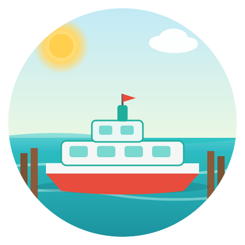
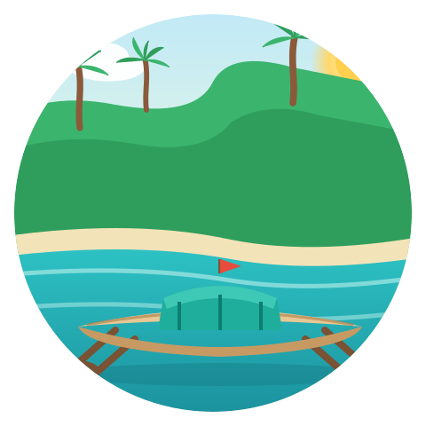
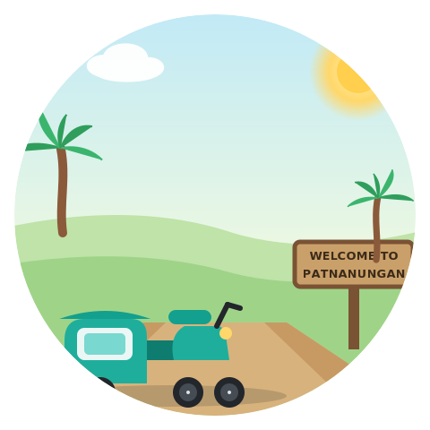
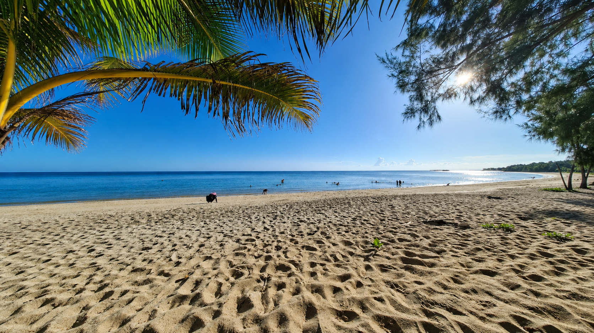
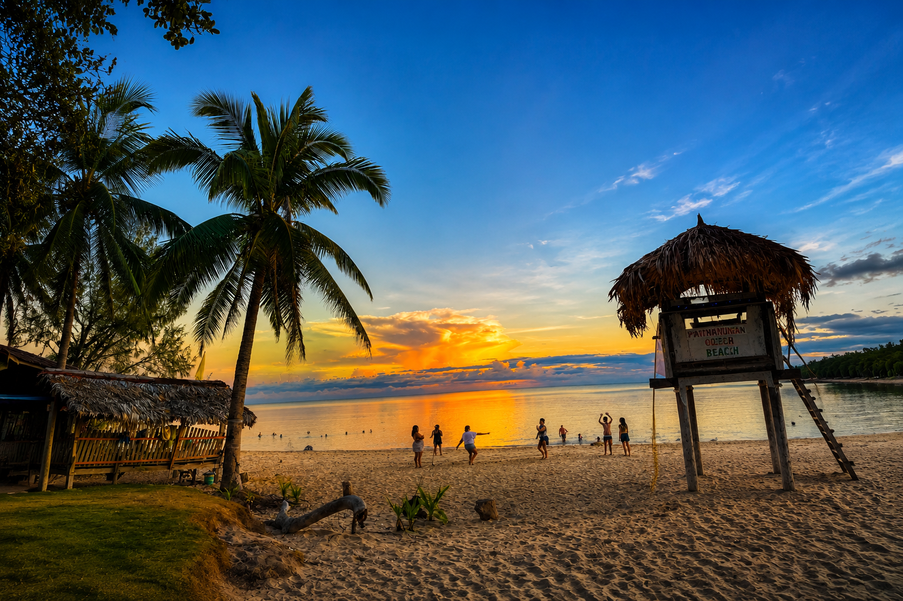
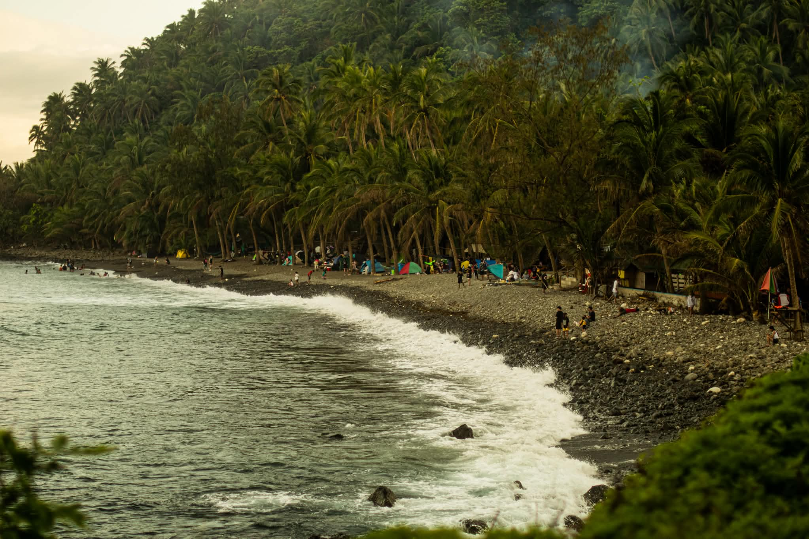

Reaching Patnanungan requires a bit of planning, but every step of the journey becomes part of the story.




Recommended travel window. Calmer seas and drier weather make ferry crossings comfortable and beaches enjoyable.

Coolest temps and clearest water, ideal for snorkeling and underwater photography. Best conditions of the year.

Southwest monsoon season. Rougher seas and possible ferry disruptions. Check forecasts closely before travel.